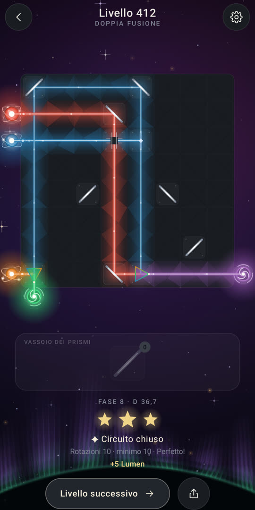
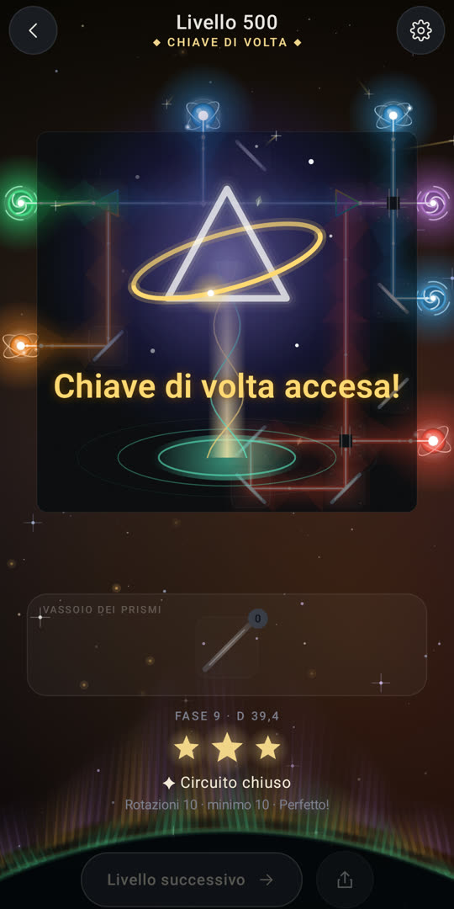
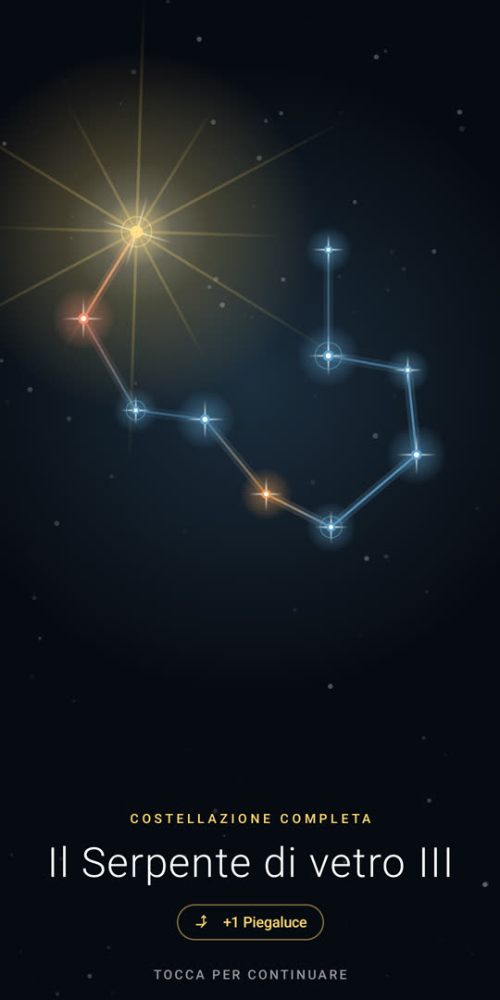

TESSERA
Tessera è un rompicapo rilassante di luce e specchi per Android. Ruota specchi, dividi raggi e fondi colori finché ogni ricevitore si illumina, e guarda ogni tavola risolta diventare una vetrata. Niente timer, niente vite, niente da comprare.
Presto su Google Play · in 9 lingue, tra cui l'italiano



- Gli specchi piegano il raggio, i divisori lo separano, i combinatori fondono i colori (ambra e cobalto fanno smeraldo), i ponti lasciano incrociare i raggi
- Ogni livello è verificato dal computer: ha una soluzione e una sola soluzione più breve; raggiungila per tre stelle
- Un Atlante del cielo di costellazioni, ognuna uno sfondo animato per la tua schermata Home
- Si gioca tra le stelle: la luce va dalle pulsar a galassie rotanti, e ogni fase è un nuovo settore dello spazio
- Ogni suono è sintetizzato dal vivo su una scala pentatonica; si gioca con un solo pollice
- Niente banner: un breve annuncio ogni tanto tra le schermate, e video che scegli di guardare per una ricompensa
- Condividi la tua scheda punteggio, sfida un amico sulla stessa tavola e tieni il tuo cielo come widget nella schermata Home
- Obiettivi facoltativi di Google Play Giochi; i rompicapi funzionano anche senza connessione
Domande
Che tipo di gioco è Tessera?
Un rompicapo di logica sulla luce: ruoti specchi e posizioni prismi perché ogni raggio raggiunga il ricevitore del suo colore. È rilassante (niente timer né vite), ma è un vero rompicapo: le ultime fasi chiedono lunghe catene di riflessi, raggi divisi e fusioni di colore.
È gratis? Ci sono annunci?
È gratis e non ha acquisti in-app. Non ci sono banner; ogni tanto può comparire un breve annuncio a schermo intero tra le schermate (mai a metà di un rompicapo), e puoi scegliere di guardare brevi video per una ricompensa, come un suggerimento in più o un potenziamento.
Quanti livelli ci sono?
1.000, in dieci fasi, da un solo specchio a matrici ottiche di colori fusi. Ogni decimo livello è una Chiave di volta con cornice d'oro, la più difficile del suo capitolo.
Si può giocare offline?
Sì, i rompicapi funzionano senza connessione internet. Gli annunci e gli obiettivi di Play Giochi richiedono una connessione.
Su quali dispositivi funziona?
Android 8.0 o successivo, su telefoni, tablet e pieghevoli (sugli schermi grandi ruota anche in orizzontale).
Informativa sulla privacy (in inglese) · Termini d'uso (in inglese)